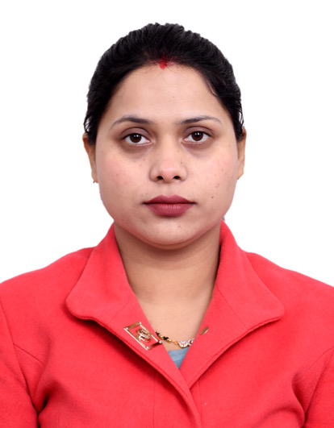

Pallavi Sharma

Summary
I am very hardworking nad dadicated person who always have focus on life goals.
Education
| Degree |
College |
University |
| 12th |
SDKMV Sen Sec School |
PSEB |
| BCA |
Kamla Nehru College |
GNDU |
| MCA |
Arya Infotech |
PTU |
Work Experience
- From 20-11-2016 to 01-01-2018 worked as Computer Teacher in S.D.K.M.V Senior Secondary School.
- From 07-08-2018 to 12-11-2019 worked as Computer Teacher in Spring Dale Public Senior Secondary School ( Affiliated to CBSE, New Delhi)
- Work experience of operation manager and speaking trainer in Bells Overseas, Jalandhar Branch from 01-01-2020 to 30-09-2021
- From 27-10-2021 to 31-3-2023 contributed time in STS World school as computer teacher of senior classes. ( Affiliated to CBSE, New Delhi)
- From 1-04-2023 to 19-10-2023 have experience of teaching in BKJ’s Apple Orchard school Phagwara. ( Affiliated to CBSE, New Delhi)
Strengths
- Confident
- Determine
- Dedicated
Contact
Hobbies